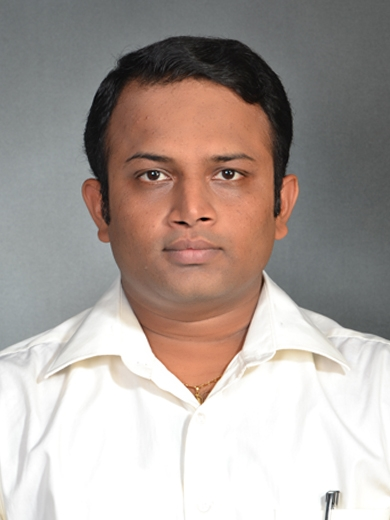

Vinayaka Krishnamurthy
Address: 1517-425,115th street East, Saskatoon | 639-471-1285 | VINAYAKA82@GMAIL.com
https://www.linkedin.com/in/vinayaka-krishnamurthy-b475991b9/
CAREER SUMMARY
- Technical professional with 5+ years of experience in Technical Education with strong knowledge of teaching, learning, and software development.
- Well versed in managing multiple tasks and teams effectively with an undisputed ability to finalize them with best results.
- Competent to inspire and motivate the team members to work productively.
- Possess excellent interpersonal, leadership and communication abilities to collaborate with various industrial and technological leaders.
- Natural analytical person, creative thinker with strong attention to detail.
TECHNICAL SKILLS
- Operating Systems: Windows, Linux, MAC.
- PCB Designing: EasyEDA, DIPTRACE
- Web Development: HTML, CSS, Bootstrap, PHP
- Microcontroller: 8051, Arduino
- Electronics lab: Analog electronics Circuits, logic design, DSP, LICs
- IIoT: Thingworx
- Adobe Creative Cloud: Character Animation, After Effects, Primer Pro
- Software Language: C, C++, JavaScript
WORK EXPERIENCE
Online Order Management Assistant Oct 2022 - Present
Canadian Tire, Saskatoon
- Responsible for Planning and coordinating online orders
- Resolve customer issues and provide support with regards to online ordering system
- Logistics, inventory management
- Have license for reach truck, Scissor Lift, Blue Giant Machine
Geek squad Sept 2022 - Oct 2022
BestBuy, Saskatoon Canada
- Resolved customer computer issues and complaints by investigating the root cause, identifying, and successfully implementing action plans to prevent recurrences.
- Provided excellent technical and customer support in setting-up, maintaining, and physical repair of computers such as installing antivirus and software updating.
- Advised customers about technical support offered through the company to ensure coverage on client devices.
Worked as IIOT Thingworx developer Jun 2021-Dec 2021
Driven-4 India, Pune, Maharashtra
- Involved in requirement analysis and coordinated with onsite team for freezing the requirements.
- Created UI design for the application using HTML, CSS, and Bootstrap.
- Designed and developed dashboards for several applications as per client’s requirement.
- Design the legacy panels with compatible widgets.
- Designing a dashboard to display KPIs with graphical view.
Front end web developer Jun 2020 – Jun 2021
Techcentrix Mysore, Karnataka
- Coordinated between programmers and clients to meet project requirements, goals, and desired functionality.
- Implemented enhancements that improved web functionality and responsiveness.
Worked as Senior technical instructor & nbsp Jun 2019 – Jun 2020
V4tech Mysore, Karnataka
- Facilitated Industry internship for Students.
- Designing PCB and circuit simulation using EasyEDA and Dip trace software packages.
- Guided students to construct circuits and test the performance for various applications.
Worked as Assistant professor Aug 2007 - May 2019
JNN College of Engineering, Shivamogga, Karnataka
- Guided several projects on IOT, and Microcontroller, Android applications, C, C++ .
- An IOT based health monitoring and tracking system for soldiers.
- An IOT based home automation system
- Initiated a new lab setup for the department which includes preparation of budget, scrutinizing the vendors and final installation of equipment’s.
- Organized several technical workshops for staff and students to bridge the gap between industry and academia.
- Organized many student-oriented activities to enhance soft skills.
- Led and managed data base administrative activities for the department.
- Developed time-table tool to utilize staff timings and to cover student’s curriculum.
EDUCATION
- MTech (Computer Applications in Industrial Drives) 2007
MCE Hassan VTU, Karnataka, India
Canadian Equivalency: Master’s Degree (WES)
- Bachelor of Engineering (Telecommunication) 2005
Kalpataru Institute of Technology, VTU, India
Canadian Equivalency: Bachelor’s Degree (WES)
REFERENCES
Available upon request